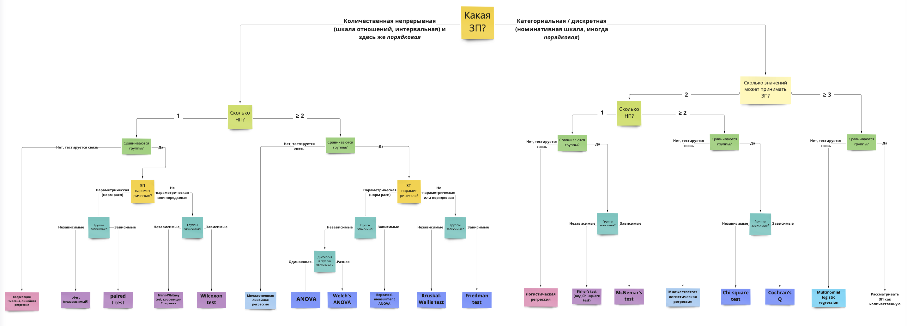

5 Выбор статистического метода, уровня значимость и статистической мощности (статистики вывода)
Исходя из гипотезы и того, как будут собраны и какие это данные, выбран статистический метод проверки экспериментальной гипотезы
До кодирования эксперимента или в начале кодирования мы так же определеяем, каким статистическим критерием будем проверять наши гипотезу. Сейчас, в случае с уже готовым дататестом, все не совсем так, и мы на уже датасете пытаемся восстановить изначальные гипотезы, для проверки которых этот датасет собирался. Вообще пытаться прикрутить гипотезу к уже собранным данным – это плохая научная практика, которая приводит к большому числу ложноположительных результатов. Об этом мы тоже будем говорить на одном из семинаров.
Раздел статистики, который относится к установлению статистического вывода относительно связи между переменными в популяции (генеральной совокупности), называется ровно так: статистический вывод, или inferential statistics. Наша цель в статистическом выводе – получить ответы на вопросы: связаны ли незавасимые и зависимая переменные между собой, и если да, то как? Отличаются несколько групп между собой по значением зависимой переменной? Для этого нам нужно выбрать статистический метод, которым мы будем проверять гипотезу, и условия, в которых он прооводится: уровень значимости и статистическая мощность.
5.1 Проверка статистических гипотез (NHST, Null Hypothesis Statistical Testing)
Давайте немного разберемся, что проиходит, когда мы применяем статистический метод для проверки гипотез.
Что вообще мы имеем в виду под проверкой гипотез? У нас есть данные исследований, которые мы собрали на какой-то выборке, часто не очень большой. Но когда мы делаем выводы относительно связи между НП и ЗП, мы говорим не о нашей небольшой группе людей, которых мы исследовали – а о всей популяции людей, она называется генеральной совокупностью. Почему так можно? Собственно, за это и отвечает математика и теория вероятностей, заложенные внутрь статистических тестов. Когда мы проводим расчет, мы получаем несколько цифр, одна из них, про которую все наверняка уже слышали и к которой часто формируется благовейный трепет – p-value. На самом деле, это только одна из связки цифр, которые нужны нам для вывода, сама по себе в вакууме она бессмысленна. Но в связке с другими цифрами она дает нам возможность понять, какова вероятность (p for probability) получить результат, который мы получили, в генеральной совокупности? И если по условиям теста полученная вероятность нас устраивает, мы делаем вывод. Пройдемся по шагам этого вывода.
Алгоритм NHST
- Формулируем эмпирическую гипотезу (это мы уже сделали выше)
- Формулируем нулевую \(H_0\) и альтернативную \(H_1\) гипотезы. Для того, чтобы провести статистический тест, нужно определить еще статистическую гипотезу – тестируемое утверждение об отсутствии различий между группами (если гипотеза подразумевает сравнение групп) или об отсутствии связи между переменнами (если гипотеза про связь). Это \(H_0\), нулевая гипотеза, которую мы пытаемся опровергнуть в статистическом тестировании (да, именно опровергнуть, а не подтвердить – выводы, которые мы можем сделать отноосительно нулевой гипотезы – только отвергнуть или не отвергнуть, не можем подтвердить ее и принять). Противоположная к нулевой гипотезе – альтернативная гипотеза, \(H_1\). Это статистическая гипотеза, противоположная \(H_0\), о разнице между группами или о наличии связи. Удобно, когда она тоже сформулирована, чтобы всем придерживаться одного языка статистических тестов.
- Выбираем статистический критерий для проверки (t-test, Wilcoxon/Mann–Whitney–test, ANOVA, lm) – об этом речь как раз пойдет чуть ниже.
- Выбираем условия, при котором будем рассчитывать статистический критерий – уровень значимости и статистическую мощность. Это два одних их самых важных параметров в тестировании гипотез. Эти понятия задают вероятностные рамки, в которых мы будем проводить тест – а именно вероятности получить значимый результат (различия или связь), если его на самом нет в генеральной совокупности (ошибка первого рода) и вероятность получить незначимый результат, если его на самом деле нет в генеральной совокупности (ошибка второго рода), Скорее всегоо, вы уже сталкивались с такой таблицей:

Другой популярный вариант для объяснения ошибок первого и второго рода:
 Вероятность, при которой в генеральной совокупности нет разницы между группами или связи, но мы получили ее на наших данных – это и есть уровень значимости, который мы задаем сами. А вероятность, при которой в генеральной совокупности есть разница между группами или связь, но мы не получили ее на наших данных – это 1 - статистическая мощность теста.
Вероятность, при которой в генеральной совокупности нет разницы между группами или связи, но мы получили ее на наших данных – это и есть уровень значимости, который мы задаем сами. А вероятность, при которой в генеральной совокупности есть разница между группами или связь, но мы не получили ее на наших данных – это 1 - статистическая мощность теста.
Уровень значимости \(\alpha\) – это уровень вероятности, при достижении которого мы будем считать, что нулевая гипотеза \(H_0\) подтвердилась, и значимых различий или связи между переменными нет. Это просто значение из пространства вероятностей получить значимый результат случайным образом, при условии, что его на самом деле нет в генеральноой совокупности. Психологи просто выбрали значение \(\alpha = 0.05\) и решили, что 5% ложноположительных результатов в психологии – подходящий вариант (сейчас идет большая дискуссия, так ли это). А если мы возьмем, например, физику элементарных частиц, то здесь речь об открытии новой частиц идет только на уровне \(\alpha = 0.000001\)!
Уровень статистической мощности (statistical power) – это положительная метрика, уровень вероятности, при котором мы гарантируем, что если различия между группами или связь между переменными есть в генеральной совокупности, то мы сможем найти ее на наших данных при помощи нашего статистического теста. Если смотреть на таблицу ошибок первого и второго, статистическая мощность это \(1 - \beta\), 1 - вероятность ошибки второго рода, не найти значимый эффект, если он есть. Статистическая мощность и вероятность ошибки второг орода – противоположные понятия, в суммме дают 1. В психологии конвенционально сложилось, что всего статистическую мощность принимают на уровне \(power = 0.8\)
- Считаем, сколько данных нужно собрать при выбранном статистическом тесте, выбранном уровне значимости \(\alpha\) и выбранной статистической мощности \(power\). Это можно рассчитать в Gpower https://www.psychologie.hhu.de/arbeitsgruppen/allgemeine-psychologie-und-arbeitspsychologie/gpower или в R
- Проводим выбранный статистический тест: получаем статистику и p-value.
- Сравниваем p-value с выбранным уровнем значимости α
5.2 Выбор статистических методов для разных гипотез
Итак, давайте попробуем разобраться получить ответы на вопросы о наших гипотезах.
Гипотезу 1 мы сводили к нескольким вариантам:
a) "студенты возраста 15, 16, 17 лет будут выбирать меньшие значения переменной Walc, чем студенты 18 лет и старше"
b) "студенты возраста 15 лет будут выбирать меньшие значения переменной Walc, чем студенты 16 лет и старше
Как можно их проверить? Это звучит как тест-сравнение двух или нескольких средних по позрастам, 15-17 лет и 18-22 (первый вариант) и 15 лет и 16-22 года (второй вариант).
Гипотезу 2 будем проверять в виде:
Чем ниже студенты оценивают качества семейных отношений famrel, тем выше они отмечают частоту употребления алкоголя Walc
Здесь у нас нет групп, мы проверяем гипотезу о наличии связи между переменными (условно – чем больше значение НП, тем больше или меньше значение ЗП, с ростом НП также происходят изменения и в ЗП)
Гипотеза 3:
Студенты, у кого было много пропусков (переменная absences_mat или absences_por, высокие значения), будут иметь более низкий средний балл (среднее из переменных G1_mat, G2_mat, G3_mat или G1_por, G2_por, G3_por -- низкие значения)
Как понять, какой тест выбрать? Это, наверное, один из самых сложных вопросов в статистике.
Вопросы, которые влияют на принятие решения относительно статистического теста:
- Зависимая переменная непрерывная (интервальная шкала или шкала отношений) или категориальная / дискретная (номинативная или порядковая шкала)?
- Если ЗП непрерывная – она описывается параметрическим (чаще всего нормальным) распределением? (определяется чаще “на глаз” по графику плотности вероятности или QQ-графиками, тесты на нормальность почти всегда будут давать негативный результат из-за чувствительности и поэтому в современном анализе данных используются мало)
- Сколько независимых переменных?
- НП непрерывные (интервальная и шкала отношений) или категориальные / дискретные (номинативная и порядковая)?
- Если НП категориальные и мы сравниваем группы – данные в группах зависимы или нет? Если нет, как сильно отличаются данные в группах, можем ли сказать, что дисперсия ЗП примерно одинакова в группах или нет? (равенство дисперсий называется Homogeneity of Variance, проверяется с помощью Levene’s test)
Есть большое количество схем, но обычно они сильно перегруженны и сложны в использовании, больше путают, чем помогают.
Но я зачем-то все равно решила попробовать нарисовать свою, и вот результат: https://miro.com/app/board/uXjVOxmKhr8=/?share_link_id=245423331470 
Здесь не все возможные методы статистической проверки гипотез. Однако, скорее всегоо, тут отображены большинство методов, которые могут вам понадобиться в психологических исследованиях. Надеюсь, вы сможете разобраться, и вам будет полезно
Эти же методы списком:
- ЗП количественная, непрерывная, и одна НП, количественная, непрерывная – корреляция Пирсона (Pearson correlation) или линейная регрессия (linear regression).
- ЗП количественная, непрерывная, и две и более НП, количественные, непрерывные – множественная линейная регрессия (multiple linear regression).
- ЗП количественная, непрерывная, и параметрическая, и одна НП, категориальная, дискретная. Группы НЕзависимые – independent t-test.
- ЗП количественная, непрерывная, и параметрическая, и одна НП, категориальная, дискретная. Группы зависимые – paired t-test.
- ЗП порядковая или НЕпараметрическая, и одна НП, категориальная, дискретная или количественная, непрерывная. Ассоциативная связь – корреляция Спирмена (Spearman correlation). Если группы, НЕзависимые – Mann-Whitney test.
- ЗП порядковая или НЕпараметрическая, и одна НП, категориальная, дискретная или количественная, непрерывная. Ассоциативная связь – корреляция Спирмена (Spearman correlation). Если группы, зависимые – Wilcoxon test.
- ЗП количественная, непрерывная, и параметрическая, и две и более НП, категориальные, дискретные. Группы НЕзависимые – ANOVA.
- ЗП количественная, непрерывная, и параметрическая, и две и более НП, категориальные, дискретные. Группы зависимые – repeated-measurment ANOVA.
- ЗП порядковая или НЕпараметрическая, и две и более НП, категориальные, дискретные. Группы независимые – Kruskal-Wallis test.
- ЗП порядковая или НЕпараметрическая, и две и более НП, категориальные, дискретные. Группы зависимые – Friedman test.
- ЗП категориальная, может принимать два значения, и одна НП, количественная, непрерывная – логистическая регрессия (logistic regression)
- ЗП категориальная, может принимать два значения, и две и более НП, количественные, непрерывные – множественная логистическая регрессия (multiple logistic regression)
- ЗП категориальная, может принимать два значения, и одна НП, категориальная, дискретная. Группы НЕзависимые – Fisher’s test (Chi-square test).
- ЗП категориальная, может принимать два значения, и одна НП, категориальная, дискретная. Группы зависимые – McNemar’s test.
- ЗП категориальная, может принимать БОЛЕЕ двух значениq, и одна или более НП, количественных, непрерывных – мультиномиальная логистическая регрессия (Multinomial logistic regression, multivariate logistic regression)
В целом, если разобраться в тестах не получилось, ответы на эти вопросы помогают сформировать запрос и дальше отправиться в гугл или к коллегам с конкретным вопросом, например какой тест использовать для сравнения двух независимых групп в количественной шкале? Я подразумевала, что можно почитать статьи из поисковой выдачи, но оказалось, что гугл даже научился иногда отвечать на этот вопрос…